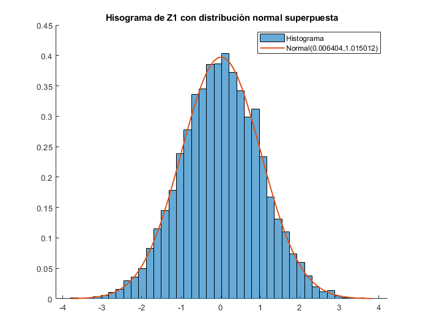
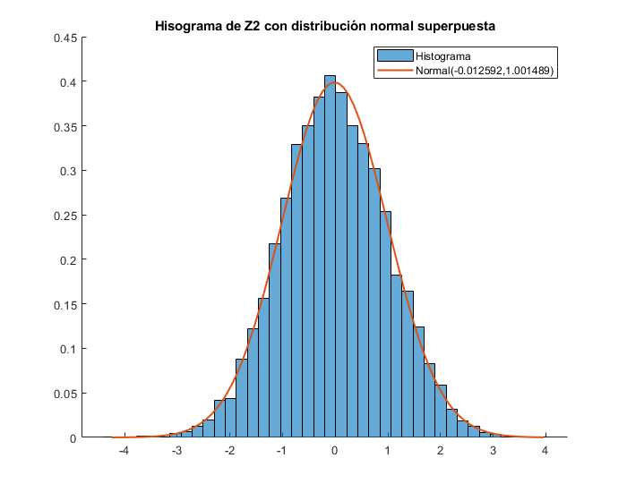
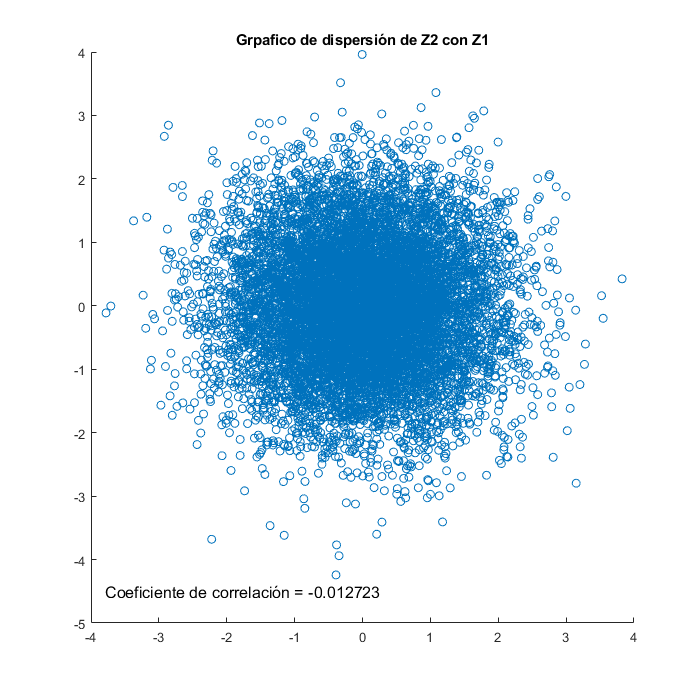

Ejercicio 1.a
Desarrollo del ejercicio 1.a.
clear all; clear vars;
Fijamos la semilla del generador de números aleatorios para tener repetitividad.
rng(1)
Fijamos la cantidad de muestras.
N=10000;
Creamos 2 vectores de longitud N que contienen las realizaciones de las variables aleatorias uniformes entre 0 y 1.
U1 = rand(1,N); U2 = rand(1,N);
Generamos las variables Z1 y Z2 con las funciones propuestas en las consignas.
Z1=sqrt(-2*log(U1)).*cos(2*pi*U2); Z2=sqrt(-2*log(U1)).*sin(2*pi*U2);
Calculamos las medias y varianzas.
mean_Z1 = mean(Z1); mean_Z2 = mean(Z2); var_Z1 = var(Z1); var_Z2 = var(Z2);
Creamos los histogramas para visualizar la forma de las PDF de las variables. Nótese que se asemejan a Normales.
figure('Position', [0, 0, 700, 550]); hold on; h1 = histogram(Z1,40,"normalization","pdf"); y = min(Z1):0.1:max(Z1); mu = mean_Z1; sigma = sqrt(var_Z1); f = exp(-(y-mu).^2./(2*sigma^2))./(sigma*sqrt(2*pi)); plot(y,f,'LineWidth',1.5); legend('Histograma',sprintf('Normal(%f,%f)',mean_Z1,var_Z1^2)) title('Hisograma de Z1 con distribución normal superpuesta'); hold off
figure('Position', [0, 0, 700, 550]); hold on; h2 = histogram(Z2,40,"normalization","pdf"); y = min(Z2):0.1:max(Z2); mu = mean_Z2; sigma = sqrt(var_Z2); f = exp(-(y-mu).^2./(2*sigma^2))./(sigma*sqrt(2*pi)); plot(y,f,'LineWidth',1.5); legend('Histograma',sprintf('Normal(%f,%f)',mean_Z2,var_Z2^2)) title('Hisograma de Z2 con distribución normal superpuesta'); hold off
coeficiente de correlación de Pearson, la función corrcoef coincide en definición matemática con la de Pearson
Coef_correlacion = corrcoef(Z1,Z2) % Devuelve una matriz, nos importan las esquinas 01 y 10, esas con las % correlaciones de Z1 con Z2 y Z2 con Z1 % El scatterplot devuelve una mancha bastante circular, wikipedia tiene una % imagen que indica que esa forma indica que la correlación es cercana a 0.
Coef_correlacion =
1.0000 -0.0127
-0.0127 1.0000
Scatter plot entre las variables:
figure('Position', [0, 0, 700, 700]); hold on scatter(Z1,Z2); title('Grpafico de dispersión de Z2 con Z1'); text(-4+0.2,-5+0.5,sprintf("Coeficiente de correlación = %f",Coef_correlacion(1,2)), 'FontSize', 12, 'Color', 'black'); hold off